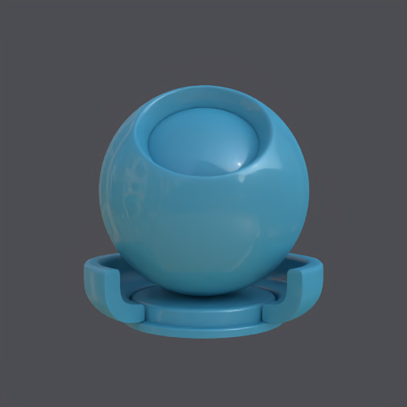

Examples/DisneyPrincipled/disney_principled_carpaint.mtlx
GLSL: ok · 5.72s
Cycles: ok · 5.92s

GLSL log
Wrote frame to disk: /tmp/opencode/ab-cycles-vs-glsl-light05-512/images/Examples__DisneyPrincipled__disney_principled_carpaint/glsl.png
Cycles log
[OpenColorIO Info]: Color management disabled. (Specify the $OCIO environment variable to enable.) Wrote frame to disk: /tmp/opencode/ab-cycles-vs-glsl-light05-512/images/Examples__DisneyPrincipled__disney_principled_carpaint/cycles.png